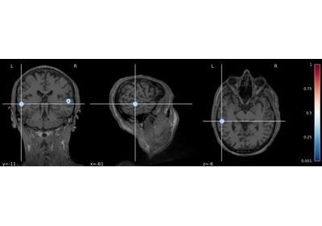

General examples¶
Introductory examples.
Compute SESAME inverse solution on evoked data
Compute SESAME inverse solution on evoked data

Compute SESAME inverse solution on evoked data in volume source space
Compute SESAME inverse solution on evoked data in volume source space
Compute SESAME inverse solution on evoked data with source constraints
Compute SESAME inverse solution on evoked data with source constraints
Compute SESAME inverse solution on evoked data with given source location prior
Compute SESAME inverse solution on evoked data with given source location prior

Explore SESAME alternative inverse solutions on evoked data
Explore SESAME alternative inverse solutions on evoked data
Compute SESAME inverse solution on simulated data in the frequency domain
Compute SESAME inverse solution on simulated data in the frequency domain

Compute SESAME inverse solution on high-density EEG data
Compute SESAME inverse solution on high-density EEG data